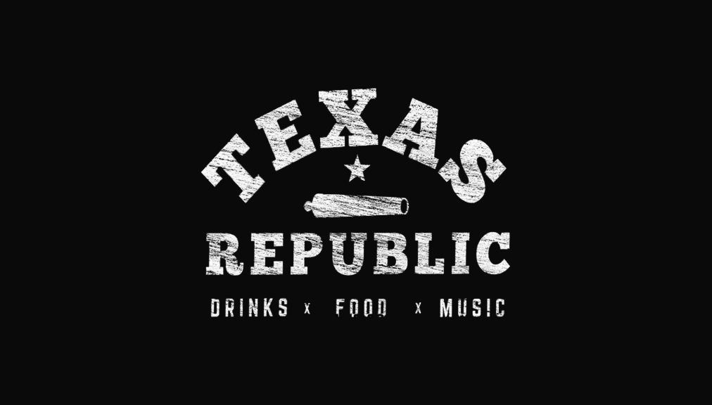
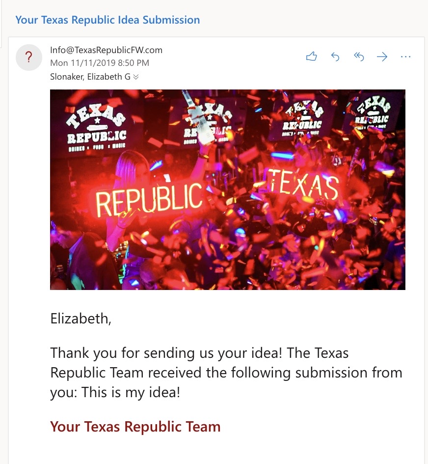
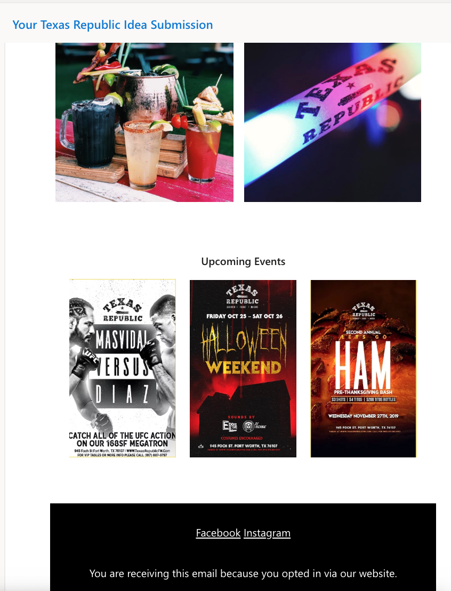
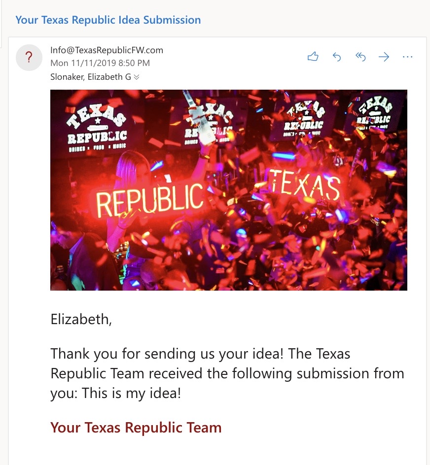
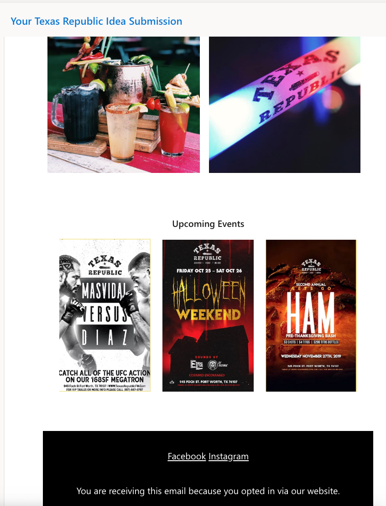

Texas Republic
Website Redesign Concept
Overview
Texas Republic Bar & Kitchen is a local bar native to Texas, located in the heart of Fort Worth's West 7th. This modern, Texas inspired bar is a key destination for food, drinks, and a vibrant nightlife. They host weekly events, private gatherings, catering, and bottle services.
My Role
Market Research, Segmentation, Value Proposition, Marketing Strategies, Wireframes, Email Marketing, Website Development, Responsive Mobile & Tablet
Objectives
- Drive online sale conversions through new website features
- Spread brand presence and awareness across all online platforms
Target Audience Segmentation
Target Audience
Young adults/Millenials between the ages of 21-34 located in the DFW metroplex
Geographics - Geography
Texas Republic's location on West 7th Street attracts a particular customer base who is interested in Fort Worth's culture and vibe.
Demographics - Age, Gender, Education, Income
The millennial, young adult audience is similar in technology and social media usage and psychological profiles.
This demographic is:
- Technologically competent
- Highly active on social media
- Motivated to click on content that they find entertaining or funny
- Concerned with their social identity
- Prioritizes experiences and making/capturing memories
What does this mean for their website?
- Make the website mobile responsive. Place key information such as hours and location at the top for the mobile version.
- Take advantage of social trends and pop culture. Ensure content is funny and engaging and utilize all different forms of posting (photos, video, gifs, boomerangs, etc).
- Use photos to emphasize the Texas Republic "experience"s instead of product and decor shots. The products are an important revenue stream, but it's the experience that will keep this demographic coming back.
Value Proposition
Current Online Revenue Model
- Ticket Sales
- VIP Table Packages
- Catering
- Private Events
How this redesign will increase online revenue
- Facilitate booking events and catering through online contact forms
- Online merchandise store
The current website doesn't provide a clear way to contact the client to obtain more information about bookings.
Expanding the client's product line into online merchandising would accomplish the two objectives of this redesign (1) drive online sales (2) spread the brand. Merchandise which mixes the Western culture of Texas with the rustic, modern vibes of Fort Worth would resonate strongly with the young adult target audience.
Marketing Strategy
I identified the following online marketing strategies in order to accomplish the objectives of sale conversions and brand awareness across all online platforms.
Cross Channel Promotion
This is a form of marketing that targets the customers of one product or service by promoting a similar product. The client can advertise products from their website (merchandise and event tickets) on their social media and redirect traffic to their site.
Paid Media
Purchase Facebook and Instagram ads. Although the click through rate is less than %1, as long as these ads are placed in front of the right audience the ads will increase brand awareness.
Social Media
For the millennial demographic, the most engaging content is funny and entertaining. For example, using memes is an excellent way to connect to this audience. The client needs to utilise all (often underused) functions of each app such as snapchat filters, geofilters, Instagram stories, hashtags, unique Instagram grid layouts, boomerangs etc.
Video Marketing
Videos and boomerangs are a highly engaging and visually appealing form of media that isn’t being used by their current site, and is underused on their social media. Using videos will help the client’s content stand out from the competition.
Content Marketing
This form of marketing takes advantage of a current or relevant event that affects many people. For example, the client can host a Halloween costume event and offer a reward such as their new merch.
Features
Based on the marketing strategies and research, I developed four website features to support the redesign objectives.
1. Private Events Inquiry
The current site doesn’t provide a convenient way to contact the client with questions or immediate bookings. Adding a form makes the booking experience easier and decreases client frustration. It is standard in the industry for restaurants and venues to contact and answer questions for potential clients via email. Therefore, this feature is key to implement.
2. Catering Orders
The current site has a page titled “Catering/Private Events” but this page makes no distinction between the two. It is unclear if the menu is for private events hosted at their facility, or if the menu is for catering, or both. Furthermore, no contact information is given. Taking online catering orders and inquiries helps the client keep track of orders and decreases the amount of time that staff spends on the phone and away from their work.
3. Crowdsource New Drink Form
This form allows customers to submit a drink idea to add to the menu. Crowdsourcing stregthens the customer relationship because it directly involves the audience in the business. It creates trust in the brand because the audience can give their feedback and see the physical results of that feedback. Furthermore, this idea is highly marketable on their website and across their social media, a platform which thrives off of user engagement. Therefore, current social media followers can easily be converted to website traffic.
4. Merchandise Store
An online merchandise store grows the Texas Republic’s brand, while also creating another stream of revenue online. This store is easily advertised on social media. Products include e-gift cards, hats and apparel, and drinkware and koozies. Furthermore, online shopping fits with the technology usage of the young adult target audience.
Results


 


